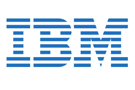
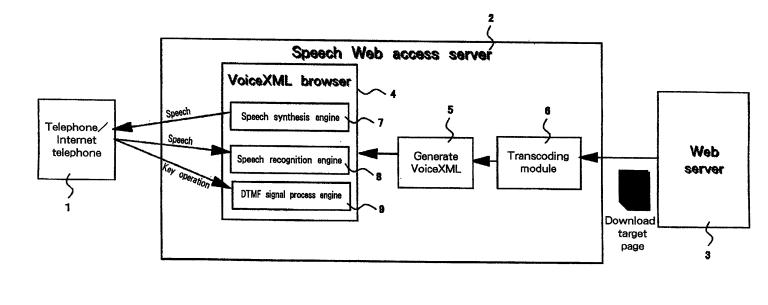
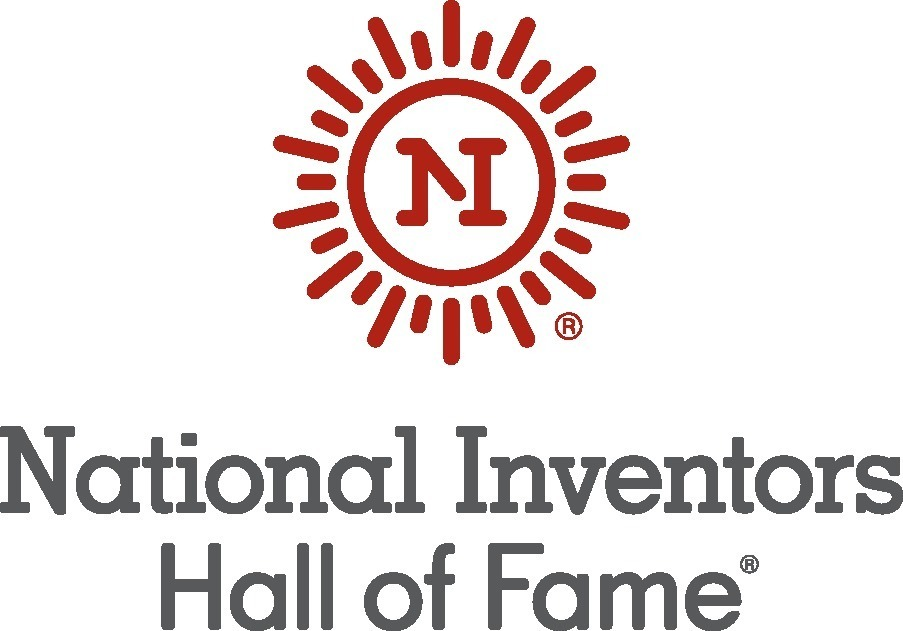

About Chieko Asakawa

Biography
Chieko Asakawa was born on November 21, 1958, in Osaka, Japan. As a young girl, Asakawa was an accomplished sprinter and an aspiring athlete with dreams of going pro. However, at age 11, tragedy struck. In a freak swimming accident, she hit her left eye on the side of a pool. This caused damage to her optical nerve, and she would become completely blind 3 years later at just 14 years old. She suddenly found some of the simplest tasks impossible to do on her own. Throughout this whole experience, she still pushed through to accomplish her goals. 4 years after losing her sight, she traveled to the U.S. to study and then came back to attend university in Japan. She got her degree in English literature at Otemon Gakuin Unviersity in Osaka in 1982. There were no Braille textbooks, so she had to make her own with the help of her brother. This sparked her interest in accessibility technology. She read an article about a two-year computer programming course designed for blind people and decided to look into it further. She completed this course at Nippon Institute and then became a student researcher at IBM in 1984. A year later, she was hired on as full-time employee. She earned her doctorate at the University of Tokyo in 2004. She has achieved the rank of IBM fellow and is one of their leading Accessibility Designers.

Underrepresentation
Chieko Asakawa has been underrepresented in multiple ways. The first one being her gender. Asakawa is involved in the field of Computer Science, which has been male dominant, especially in leadership roles. It is really rare for a woman to lead such a role at IBM. Another way Chieko Asakawa has been underrepresented is by her disabilities. When Asakawa was a child she had an accident at a pool, causing her to lose her eyesight. This probably would have caused more obstacles for Asakawa to get past, like learning how to go through school and things like that. Asakawa being visually impaired, would often times be stereotyped as a user and not a creator because of this disability. Leadership roles for the IBM are not often people with disabilities. Asakawa was determined though. She earned valuable degrees and mastered accessible computing. She later then joined IBM and became a IBM fellow, which was a high honor. Inspired by the challenges she had already faced, Asakawa started to redesign inaccessible systems. She led screen reader technology for the web and not only influenced accessibility standards but did it globally too. Through these changes and leadership from her, Asakawa improved the systems that she had dealt with since she was young. This proves how not even underrepresentation, disadvantages, or social customs can limit your capabilities and, in this case, accessibility.

Contribution
During her early years at IBM, she developed the Braille Editing System, the IBM Braille Forum Network, and the Braille Dictionary System. All of these projects were major steps forward in accessibility technology and had immediate impact. The Braille Editing System, or BES, allowed users to directly upload their Braille work in their computers and edit it. The Braille Forum Network then allowed these users to share their work across Japan as Braille data. These projects greatly increased the ease of use on computers for blind users. In 1997, she developed the Home Page Reader. According to the IBM website, this device “allowed users to navigate the internet using a simple numeric keypad that converted text and icons to speech. In 2001, Asakawa was awarded a patent for her invention.” This advancement became the most widely used web-to-speech system at the time.

Future Promise
She created the Braille Editing System while working at IBM which allows blind people to read, edit, and create documents. Looking into the future, the system that she created has the potential of going beyond just editing and reading. A way that this tool will contribute more to the future is the integration of AI. For example, if there is a graph in a document, the graph can be interpreted by AI and then read aloud using the Braille Editing System. The Braille Forum Network allowed blind users to share their work in the correct format, so in the future, we can see a brand like Grammarly, pairing up with Asakawa's creation of the Braille Forum Network. Below is a video of Asakawa explaining her Braille technology.

Selection
In our discussion, the main assertion that led us to choosing Chieko was that to us she was the most underrepresented of our options. We narrowed it down to Chieko, Katherine Johnson, and Gwynne Shotwell. Katherine Johnson recently had a movie about her in theaters in the last few years, and we felt like that made her a bit more represented. Gwynne Shotwell is hidden behind Elon Musk, but we felt that being the President of SpaceX, she would have some recognition. Chieko on the other hand, is a strong member of IBM, one of the biggest tech companies in the world, and we bet that almost nobody has heard of her. On top of this, besides being a minority, she is fully blind, making her feats incredibly impressive. While the other options were great, we felt Chieko had the best combination of unrepresented, challenged, and successful inventor amongst are options.